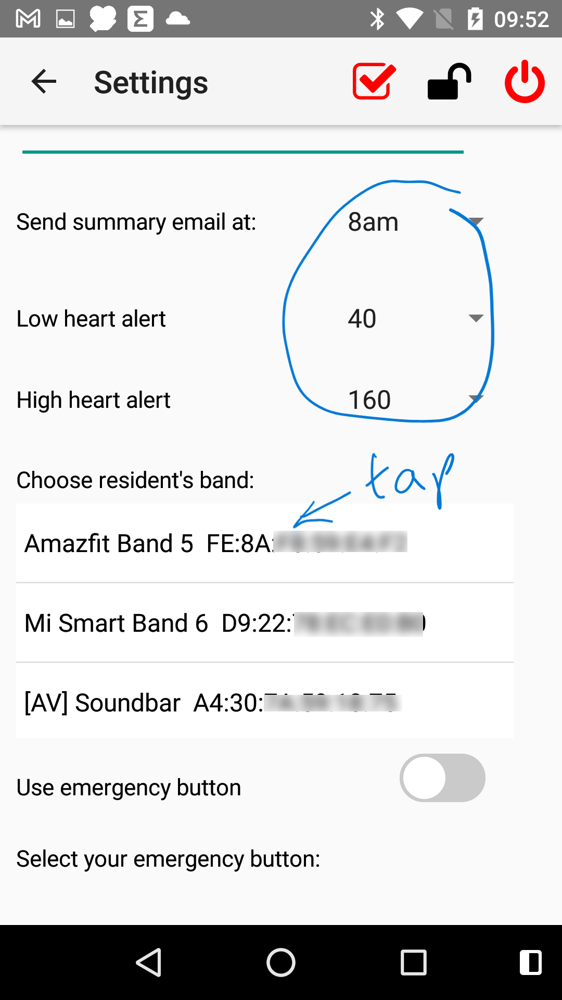

1. Once installed, click Open.
2. You will be asked to approve and select a couple of permissions.
3. You should automatically be taken to the Settings screen but if this does not happen, or you need to return to it in the furture, tap the cog icon in the top right corner.
4. Once inside the Settings screen, change the settings to match the following images. (Tap the eye icon to view the password.) The Resident's name, time of the summary email and the alert values can be set to whatever works best for you. The carers' email address should be replaced by Carol's. You can add more than one address if more than one person should receive the alerts and summary emails. Under 'Choose Resident's band', your Amazfit band should appear in the list. Tap it so that the band's text becomes bold.
5. Tap the red check box at the top of the screen, and the settings will be checked. If all looks good, leave the Settings screen by tapping the back arrow (or Android's back button). Cyfer Health App should now be working.
At this point the Cyfer Health app should continue to run 24x7. If you wish to stop the app, go into the Settings screen and tap the red power button in the top right corner.